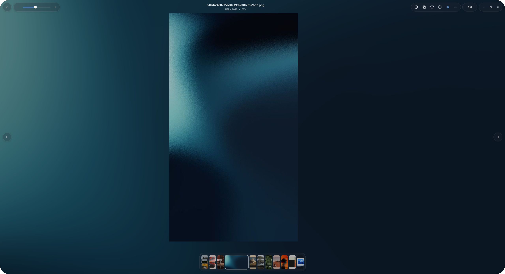

Common
JPEG · PNG · GIF · BMP · TIFF · ICO · WebP · AVIF · HEIC
Native Windows photo viewer
Fast viewing, a calm photo library and your real folders. No import. No cloud required.

Preview
A short look at browsing, viewing and moving through images without leaving your flow.
Built around the image
VetroLook uses native Windows graphics and image libraries, so the interface gets out of the way of the picture.
Quick Look for Explorer
Preview an image right where you are, then keep its folder context when you open it.
Supported formats
JPEG · PNG · GIF · BMP · TIFF · ICO · WebP · AVIF · HEIC
NEF · DNG · CR2 · CR3 · ARW · RAF · RW2 · ORF · PEF
OpenEXR for HDR work, tone-mapped for display.
Native performance
VetroLook stays close to Windows, so opening, navigating and inspecting images does not need a browser runtime.
Launches and image changes are captured from the desktop frame — not estimated from an internal timer.
See the numbers ↓Competitive benchmark
Measured from a true cold launch and from the moment you press the next-photo key. Every chart uses the median result: a useful picture of the typical experience, not a lucky run.
Cold start
A fresh launch with a JPEG already selected. 20 runs per app.
Camera RAW
Time until the first visible photo from a fresh launch. 20 runs per app.
Everyday browsing
500 consecutive JPEG transitions. Median time from key press to a changed photo.
Jump around
500 random, boundary-safe JPEG transitions. Same files, less predictable order.
RAW browsing
500 consecutive NEF and DNG transitions. Median time from key press to a changed photo.
Jump around in RAW
500 boundary-safe random transitions through the same NEF and DNG set.
Real mixed folder
80 transitions across JPEG, PNG, WebP, NEF and DNG — a deliberately varied folder.
About these results. Windows Photos and ImageGlass are included in cold-start comparisons, but excluded from navigation rankings because their automated navigation could not be reproduced reliably. Results use VetroLook 1.1.0, Windows 11, Ryzen 5 5600 and RTX 3060 Ti.
Privacy · Local-first by design
No account. No upload. No analytics. Files remain in the folders you already use.
Open images quickly, zoom and pan smoothly, then move through a folder without losing context.
Build a searchable library directly from files already on your computer. Nothing needs to be imported or uploaded.
Browse photo stacks, inspect EXIF and histograms, work with RAW and modern formats, and drag real files out.
Windows 10 and 11
Windows 10 1809+ or Windows 11. x64 architecture.
Checking latest release
Other formats: EXE · MSIX · Portable